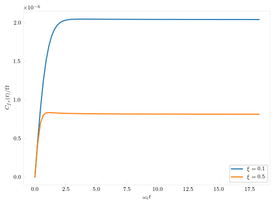
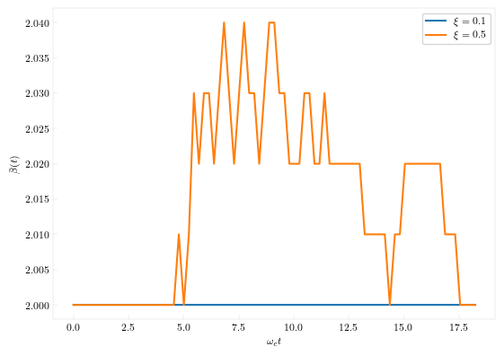

Quantum Correlation Functions
Thermal correlation functions for open quantum systems can be calculated using complex time path integral. QuantumDynamics.jl implements both the original path integral methodology and the newer tensor network approach.
Basic Rate Theory
Below is an example of using the tensor network approach to calculate the rate using the flux-side correlation function.
using QuantumDynamics
invcm2au = 4.55633e-6
H = Matrix{ComplexF64}([
0.0 0.000525
0.000525 0.0
]) * invcm2au
β = 87.7899537566
svec = [1.0 -1.0]
state1 = [1.0 0.0; 0.0 0.0]
A = 1im * Utilities.commutator(H, state1)
B = copy(state1)
idmat = [1.0 0.0; 0.0 1.0]
Jw = [SpectralDensities.ExponentialCutoff(; ξ=0.1, ωc=500invcm2au)]
At, avgbond = ComplexTNPI.A_of_t(; Hamiltonian=H, β, t=0.0, N=50, Jw, svec, A=idmat)
Q = real(tr(At*state1))
time_xi01, corr_xi01, avg_bond_dim_xi01 = ComplexTNPI.complex_correlation_function(; Hamiltonian=H, β, tfinal=8000.0, dt=100.0, N=50, Jw, svec, A, B=[B], Z=Q, verbose=true, extraargs=Utilities.TensorNetworkArgs())
Jw = [SpectralDensities.ExponentialCutoff(; ξ=0.5, ωc=500invcm2au)]
At, avgbond = ComplexTNPI.A_of_t(; Hamiltonian=H, β, t=0.0, N=50, Jw, svec, A=idmat)
Q = real(tr(At*state1))
time_xi05, corr_xi05, avg_bond_dim_xi05 = ComplexTNPI.complex_correlation_function(; Hamiltonian=H, β, tfinal=8000.0, dt=100.0, N=50, Jw, svec, A, B=[B], Z=Q, verbose=true, extraargs=Utilities.TensorNetworkArgs())
